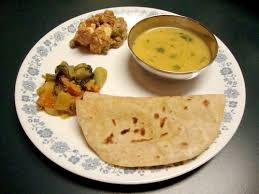

The rice is typically served on a plate big enough to fit both the rice and the curry.
D02
Rs.45(pint)
Egg fried rice
Fried rice is a dish of cooked rice that has been stir-fried in a wok or a frying pan and is usually mixed with other ingredients such as eggs, vegetables, seafood, or meat. It is often eaten by itself or as an accompaniment to another dish.
D03

Rs.30(pint)
chapathi
A round flat unleavened bread of India that is usually made of whole wheat flour and cooked on a griddle.
D04
Rs.30(pint)
Curd rice
Curd rice is a south Indian dish made with precooked rice, curd (yogurt) & tempering spices. It is more often eaten by south Indians as a part of a meal.